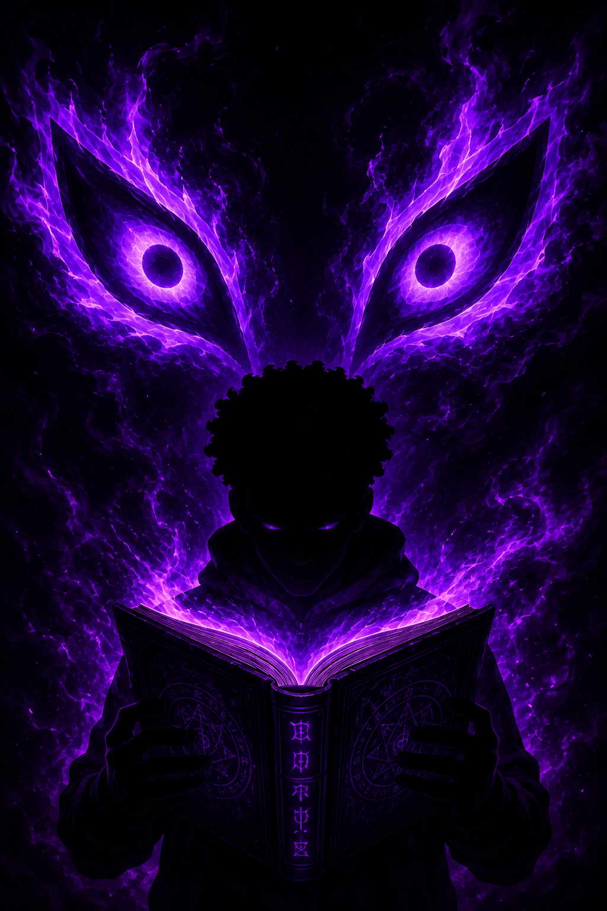

Entre Humanos e Lendas

Entre Humanos e Lendas é um projeto inspirado no folclore brasileiro,
misturando fantasia,
mistério e elementos sobrenaturais.
A obra apresenta criaturas lendárias,
personagens marcantes e
acontecimentos sombrios em um universo onde humanos convivem
com seres
ancestrais sem nem desconfiar de sua existencia.
A obra acontece em torno de um grupo de adolescentes de uma escola integral que
teve o azar de colidir com o mundo das lendas. Depois de uma invasão no instituto
muita coisa foi exposta, e agora eles terão que lidar com o fardo de conhecerem o
mundo dessas entidades, até então, desconhecidas.